Hi, I am Savio Praneeth, a 12-year-old with a passion for adventure, football, and South Indian food. My dream is to become an aeronautical engineer while savoring life’s spicy treats!
Quotes That Inspire
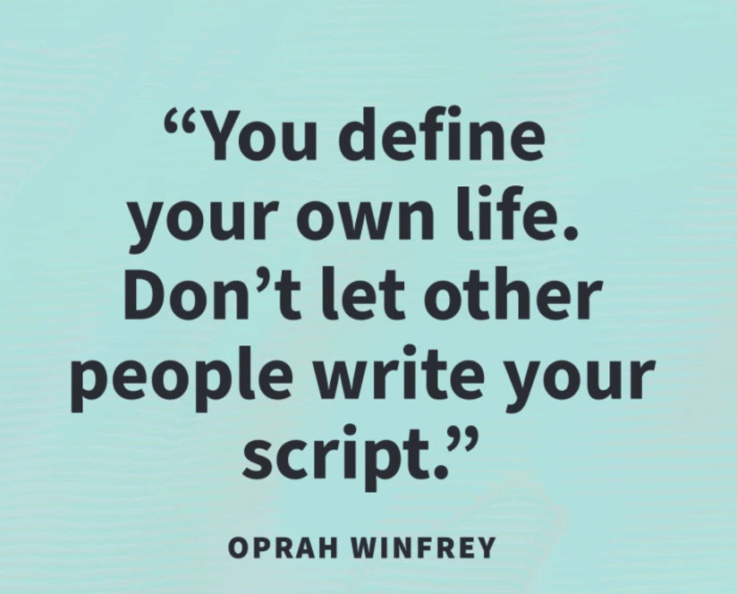
"The biggest adventure you can take is to live the life of your dreams." - Oprah Winfrey
Achievements

This trophy represents the confidence in explaining each feature that my team and I have built into the robot.
My Music and My Favorite Music
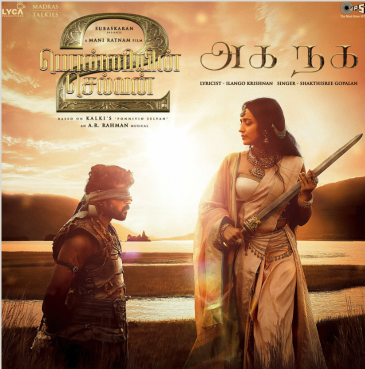
Aga Naga is a song that showcases a moment in ancient Tamil Nadu.
Book of faith-Chapter 1
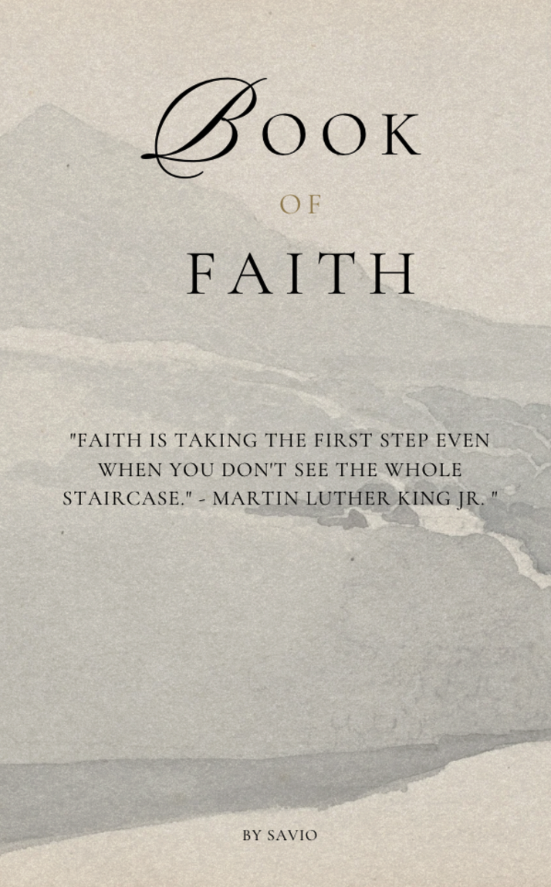
I’m 12 years old, and I live in Bangalore. I speak Tamil and am from Tamil Nadu, and I can also understand a bit of Malayalam. Today, I’ll share a story about the time I attended a chess tournament, only to leave after the third round because I was afraid of losing. This experience taught me how to overcome my fears. The story begins with my dad waking me up, saying, "You need to get up for the chess tournament!" I quickly jumped out of bed, rushed to the bathroom, washed my face, and brushed my teeth. After completing my morning routine, I left with my dad and sister for the tournament location, which was about an hour’s drive away. When I arrived, I saw many kids waiting outside the hall where the tournament was being held. I waited for about 20 minutes until it was time for my match. When my opponent arrived, I entered the hall, sat at the table, and began my game. I was playing as Black and made a mistake that led to me being checkmated. Unfortunately, the same thing happened in my next two matches. I became discouraged, thinking I couldn’t win any of my matches. Each mistake made me more nervous, and in the end, I told my dad I couldn’t continue, so I ran back home. Afterwards, I decided to practice chess every day. I watched videos on strategies and the best opening moves. Now, I’m preparing for the next tournament, ready to face my fears and perform better. This experience taught me the importance of perseverance and overcoming fear. .
Family first!
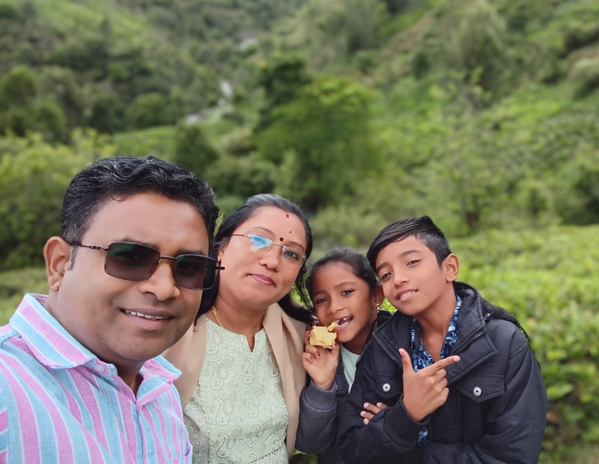
A selfie from my hometown. This picture was taken at my hometown, Ooty, on a cliffside!
My landscapes
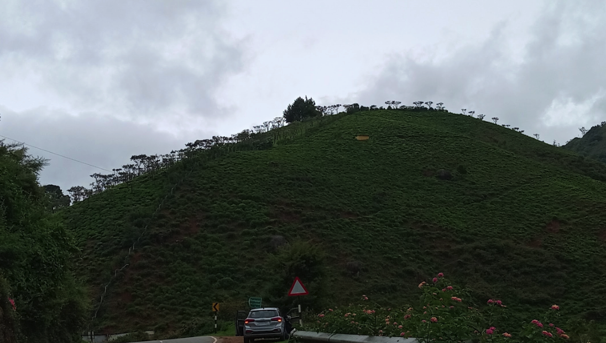
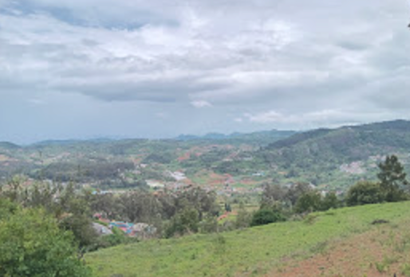
Here are landscapes too
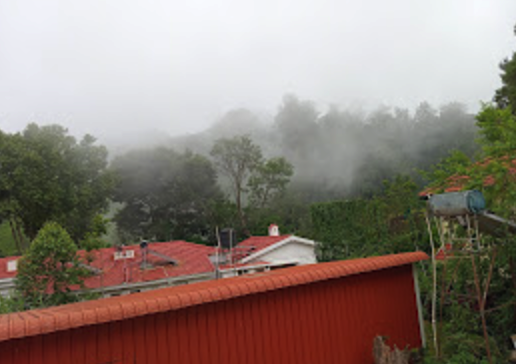
 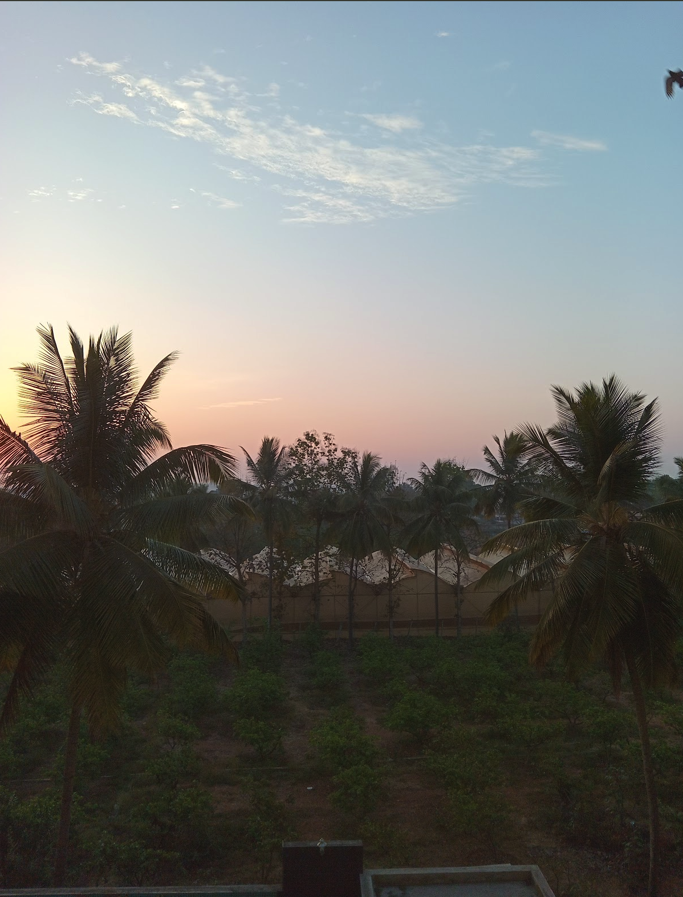
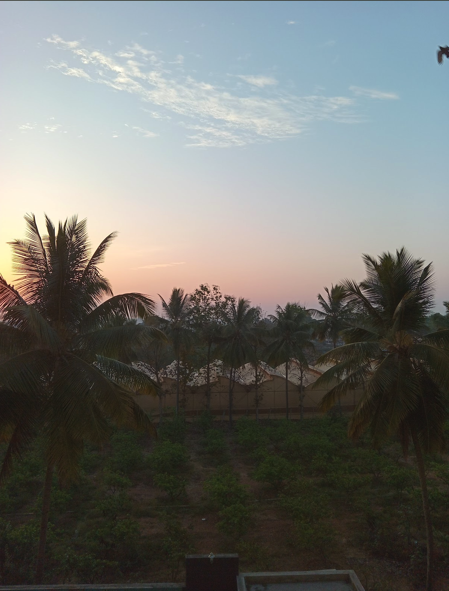
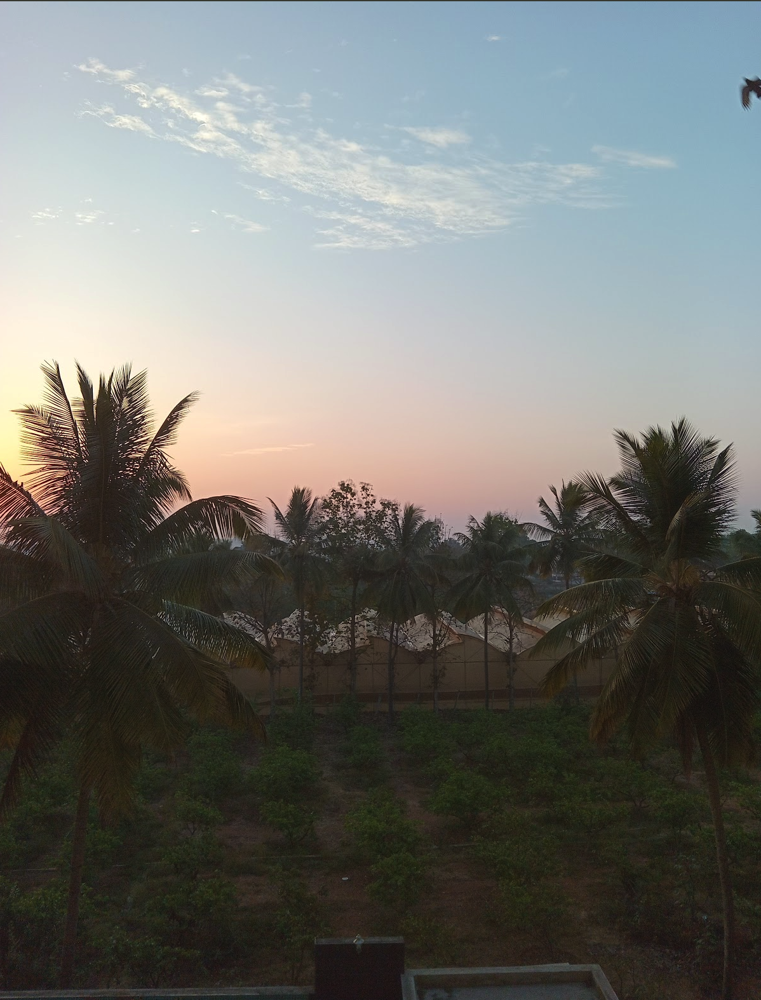
Foodies
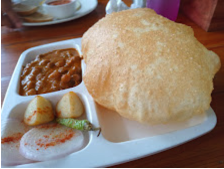
This is also a picture taken at my hometown. The reason I chose this picture is that you can see my car, with a huge mountain in the background.
My Fav photos!
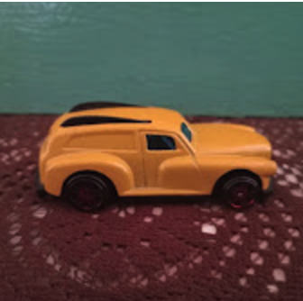
A Car that is more special then a real life sports cars!
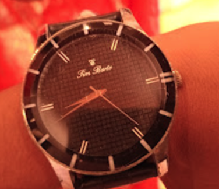
Visit My YouTube Channel
Visit My Recipe Journal
My fav watch is special, I got this from my Father!